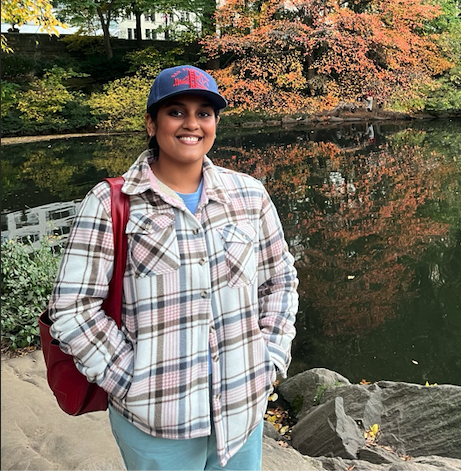

Cutdown
- Multimodal video-clip ranker combining transcript scoring, frozen embeddings, and a trainable ranker head
- Full FastAPI + Next.js upload-to-export pipeline evaluated against human-rated highlight clips
FastAPI · Next.js · FFmpeg · PyTorch
A few things I've built, from multimodal video to the kernels underneath.
FastAPI · Next.js · FFmpeg · PyTorch
Triton · CUDA · PyTorch · A100
Python · vLLM · SGLang · TensorRT-LLM
Next.js · Fastify · pgvector · Temporal · OpenAI · Kubernetes
Python · FastAPI · SQLite · Docker
TypeScript · React · Yjs · Redis · PostgreSQL · Docker
PyTorch · Torch-TensorRT · FastAPI · Modal
PyTorch · ONNX Runtime · FastAPI · Modal
FastAPI · OpenAI · PostgreSQL · React
vLLM · CUDA · Kubernetes
PyTorch · TensorRT · ONNX
Research and applied work, from undergraduate study to hands-on robotics and ML systems.
Eminent Services Corporation
QA · Backend
NYU CILVR (GRAIL)
PyTorch · MuJoCo · Robosuite · RL · Singularity
System & AI Lab (NYU)
Triton · CUDA · PostgreSQL · Slurm
Tata Steel
GANs · Docker · CI/CD
Samsung R&D Institute India
Quantization · Pruning · Mobile
Hewlett Packard Enterprise
NLP · Azure ML
Small changes in systems I care about. The pull requests tell the story.
Python · PyTorch · Distributed Systems
Python · Triton · CUDA
Python · PyTorch · Gym
arXiv preprint · arXiv:2610.17549
Studies how reference wording changes instruction-to-task retrieval in RLBench. Across 62 tasks and 80 reference galleries, character TF-IDF reaches 61.3% mean top-1 accuracy; adding a second reference description improves accuracy by 7.0 percentage points on matched queries.
MASTER'S THESIS · NEW YORK UNIVERSITY · 2026
Builds world models that fuse tactile (AnySkin) and visual signals for dexterous robotic manipulation, evaluated across simulation benchmarks and real-world skin-sensing setups.
FIG. 01 · NEUROINFORMATICS · VOL 23(3) · 2025
Introduces a GAN-augmented ensemble model using plasma cfRNA to predict CSF pressure non-invasively. Demonstrates high predictive accuracy and clinical relevance for ICP monitoring in spaceflight and clinical contexts.
FIG. 02 · MULTIDISCIPLINARY SCIENCE JOURNAL · VOL 7(3) · 2025
Comparative study of GAN variants (DCGAN, ProGAN, StyleGAN2) for anime face synthesis. StyleGAN2 demonstrated superior effectiveness, achieving the lowest FID score among tested models.
FIG. 03 · BRAIN SCIENCES · VOL 14(12) · 2024
Review highlighting the role of AI-enhanced diffusion MRI and PET imaging in early diagnosis of neurodegenerative and neuro-ophthalmic disorders, integrating multimodal data with deep learning models for improved precision.

I'm drawn to the parts of ML that meet the real world: a robot learning through touch, a model waiting on memory, an experiment that needs to run reliably.
Six years of computer science and computer engineering have taken me through research, applied ML, and the systems underneath. I like being able to follow the problem across those boundaries.
Right now, I'm digging further into how hardware shapes a model, how to understand what it learns, and how to keep agents useful over longer tasks.
Master's in Computer Engineering · GPA 3.83/4.0
Coursework: ML, Computer Vision, Reinforcement Learning, Hardware Accelerator Design. Thesis: Visuo-Tactile World Models for Dexterous Manipulation.
Bachelor's in Computer Science Engineering · GPA 3.97/4.0
Visiting student at the National University of Singapore, Dec 2022 – May 2023. Also taught as Student Instructor for CSE1006 (Blockchain & Cryptocurrency Technologies, Winter 2023) and CSE4001 (Parallel & Distributed Computing, Fall 2023).
Triton · TensorRT · vLLM · KV-cache · Paged Attention
Python · C/C++ · CUDA · SQL · TypeScript · Bash · MATLAB
PyTorch · JAX · TensorFlow · scikit-learn · OpenCV · RAG · LangChain · LangGraph
FastAPI · Node.js · AWS · GCP · Azure ML · Docker · Kubernetes · CI/CD · PostgreSQL · pgvector · MongoDB · Pinecone
Git · Linux · Claude Code · Codex
ROS · MuJoCo · Robosuite · IsaacSim · Stable-Baselines3
I'm interested in ML engineering and research roles, thoughtful teams, and ideas worth testing.
Let's talk ↗